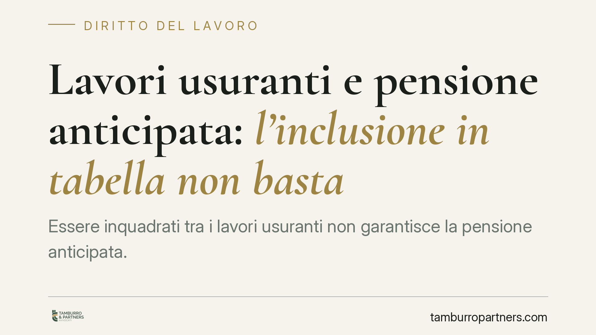

Lavori usuranti e pensione anticipata: l'inclusione in tabella non basta
Essere inquadrati tra i lavori usuranti non garantisce la pensione anticipata. La giurisprudenza di legittimità ribadisce una distinzione decisiva: altro è la cornice generale dei lavori usuranti, altro è l'elenco tassativo delle mansioni particolarmente usuranti che apre al beneficio previdenziale. Una differenza che pesa sulla posizione di molti lavoratori convinti di avervi diritto.

Il caso
Un lavoratore addetto alla conduzione di gru chiede la pensione anticipata riservata a chi svolge attività usuranti. La sua mansione rientra nella disciplina storica dei benefici per i lavori usuranti. L'INPS nega il beneficio. Il contenzioso arriva fino in Cassazione, che conferma il diniego.
Il punto non è se il lavoro del gruista sia faticoso o rischioso. Il punto è giuridico: la normativa che consente l'accesso anticipato al pensionamento individua categorie specifiche, e tra queste la conduzione di gru non figura.
> Nota redazionale: gli estremi puntuali dell'ordinanza (sezione, numero e anno) vanno riscontrati sulla banca dati ufficiale prima di qualsiasi utilizzo in sede difensiva. Il principio esposto, tuttavia, è consolidato e non dipende dalla singola pronuncia.
Inquadramento normativo
Occorre tenere distinti due piani.
Il primo è quello dei lavori usuranti in senso ampio, disciplinati storicamente dal D.lgs. 11 agosto 1993, n. 374 e dal relativo decreto attuativo, il D.M. 19 maggio 1999. Questa cornice individua una platea estesa di lavorazioni logoranti sul piano fisico o psichico.
Il secondo piano è quello dell'accesso anticipato al pensionamento, regolato dal D.lgs. 21 aprile 2011, n. 67. L'art. 1 di tale decreto non rinvia all'intera cornice dei lavori usuranti, ma circoscrive il beneficio ad alcune categorie determinate:
- i lavoratori impegnati nelle mansioni particolarmente usuranti individuate dal D.M. 19 maggio 1999;
- i lavoratori notturni;
- gli addetti alla cosiddetta «linea catena», cioè le lavorazioni in serie a ritmo vincolato;
- i conducenti di veicoli pesanti adibiti al trasporto pubblico collettivo.
Il beneficio, inoltre, non è automatico: richiede il possesso di requisiti temporali minimi (anni di svolgimento della mansione e, per i lavori notturni, un numero minimo di notti annue) secondo le soglie fissate dalla normativa, che vanno verificate caso per caso in base al periodo di riferimento.
Il principio: interpretazione restrittiva e divieto di analogia
La Cassazione muove da un criterio preciso. L'elenco delle mansioni che aprono alla pensione anticipata è tassativo. Non è un elenco esemplificativo, non ammette estensioni per via analogica.
Ne discende una conseguenza netta: il fatto che una mansione rientri nella cornice generale dei lavori usuranti non la fa automaticamente rientrare tra le mansioni «particolarmente usuranti» rilevanti per il beneficio previdenziale. Sono due categorie che possono sovrapporsi solo in parte.
Il gruista può ben essere un lavoratore usurato nel senso comune e anche nell'inquadramento generale; ma se la sua specifica mansione non compare nell'elenco richiamato dall'art. 1 D.lgs. 67/2011, non matura il diritto. Il giudice non può colmare il vuoto in via interpretativa, perché si tratta di benefici previdenziali che derogano alla disciplina ordinaria e, in quanto derogatori, si leggono in senso stretto.
Implicazioni pratiche
Per il lavoratore la lezione è concreta: la convinzione di «essere in tabella» non equivale al diritto alla pensione anticipata. Serve verificare che la specifica mansione — non la categoria generica né il settore — sia riconducibile a una delle voci tassative.
Questo incide sulla programmazione dell'uscita dal lavoro. Chi conta sull'accesso anticipato senza aver riscontrato l'esatta corrispondenza della propria posizione rischia un diniego INPS e un contenzioso dall'esito non scontato.
Attenzione anche agli oneri documentali: la prova dello svolgimento effettivo della mansione, per il numero di anni richiesto, grava sul lavoratore. La carenza documentale è una delle cause più frequenti di rigetto, a prescindere dal merito.
Cosa fare in concreto
- Verifica la mansione, non il settore. Controlla se la tua attività specifica compare nell'elenco richiamato dall'art. 1 D.lgs. 67/2011, non limitarti all'inquadramento generale.
- Ricostruisci i periodi. Raccogli buste paga, contratti e attestazioni che provino lo svolgimento della mansione per il numero di anni richiesto.
- Controlla i requisiti temporali. Confronta la tua posizione con le soglie previste per la categoria di appartenenza, aggiornate al periodo di riferimento.
- Presenta per tempo. Gli accessi ai benefici per lavori usuranti prevedono finestre e termini di domanda: muoviti prima della maturazione, non dopo.
- Fai valutare la posizione prima della domanda. Un riscontro preventivo della corrispondenza mansione/elenco riduce il rischio di diniego e di un contenzioso evitabile.
Disclaimer
Contributo informativo a cura di Tamburro & Partners Avvocati - Avv. Giuseppe Tamburro. Non costituisce parere legale.
Ogni storia di lavoro ha i suoi tempi.
Se gestisci HR e vuoi un confronto su contenzioso, ispezioni o licenziamenti, scrivi allo studio. Ti rispondiamo entro un giorno lavorativo.